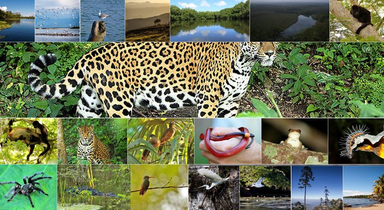

San Benito se encuentra habitado por una pequeña cantidad de animales terrestres como ardillas, zorros, armadillos, y aves como pájaros carpinteros, palomas, loros, gavilanes, chachalacas, garzas y patos. Es de carácter urgente e importante la recuperación de los bosques del área de San Benito, puesto que ha ido desapareciendo poco a poco.
La recuperación del área boscosa puede lograrse con la ayuda externa y ante todo con el apoyo del Instituto Nacional de Bosques (INAB), antes de que lo poco que queda de los árboles maderables como lo son el cedro y el caoba se exterminen. Con la destrucción de la flora ha desaparecido también la fauna, aunque todavía se pueden ver alguna que otra variedad de animales como lo son los tepezcuintles, ardillas, zorros, iguanas, gavilanes, palomas, loros, chachalacas, garzas, patos y otras clases de pájaros.
